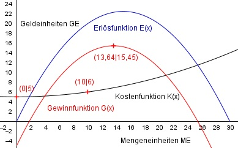

Aufgabe 132 Für eine quadratische Kostenfunktion gelten folgende betriebliche Bedingungen: Die Fixkosten betragen 5 GE (Geldeinheiten), die Grenz- kosten bei 15 ME (Mengeneinheiten) betragen 0,3 GE, und bei 10 ME entstehen Gesamtkosten von 6 GE. Für die Erlösfunktion des Monopolisten gilt: Bei 10 ME ist der Erlös 20 GE, und bei 15 ME ist er maximal. Wie hoch ist der maximale Gewinn?  Allgemeine Form einer quadratischen Kostenfunktion: K(x) = ax2 + bx + Kf K’(x) = 2ax + b K’’(x) = 2a Kf = Fixkosten = 5 GE 2 Bedingungen: 1. Die Grenzkosten bei 15 ME betragen 0,3 GE besdeutet: K’(15) = 0,3 --> 2a * 15 + b = 0,3 --> 30a + b = 0,3 I 2. Bei 10 ME enststehen Gesamtkosten von 6 GE bedeutet: (Kf = 5 GE eingesetzt) K(10) = 6 --> a * 102 + b * 10 + 5 = 6 --> 100a + 10b + 5 = 6 |-5 100a + 10b = 1 II I * (-10) + II -300a - 10b = -3 100a + 10b = 1 ----------------- -200a = -2 |:(-200) a = 0,01 a = 0,01 in I eingesetzt: 30 * 0,01 + b = 0,3 0,3 + b = 0,3 |-0,3 b = 0 Gesuchte Kostenfunktion: K(x) = 0,01x2 + 5 Erlösfunktion E(x) 2. Grades mengenabhängig wegen Monopolist: E(x) = ax2 + bx E’(x) = 2ax + b 2 Bedingungen: 1. Bei 10 ME ist der Erlös 20 GE bedeutet: E(10) = 20 --> a * 102 + b * 10 = 20 --> 100a + 10b = 20 I 2. Bei 15 ME ist er maximal bedeutet: E’(15) = 0 --> 2a * 15 + b = 0 --> 30a + b = 0 II II * (-10) + I -300a - 10b = 0 100a + 10b = 20 ----------------- -200a = 20 |:(-200) a = -0,1 a = -0,1 in II eingesetzt: 30 * (-0,1) + b = 0 -3 + b = 0|+3 b = 3 Gesuchte Erlösfunktion: E(x) = -0,1x2 + 3x Gewinnfunktion: G(x) = E(x) - K(x) = -0,1x2 + 3x - (0,01x² + 5) G(x) = -0,11x2 + 3x - 5 G’(x) = 0 G’(x) = -0,22x + 3 = 0 |-3 = -0,22x = -3 |:(-0,22) x = 13,64 ME Gmax = G(13,64) = -0,11 * 13,642 + 3 * 13,64 - 5 = Gmax = 15,45 GE G’’(15,45) = -0,22 * 15,45 + 3 = -3,399 + 3 < 0 --> Maximum